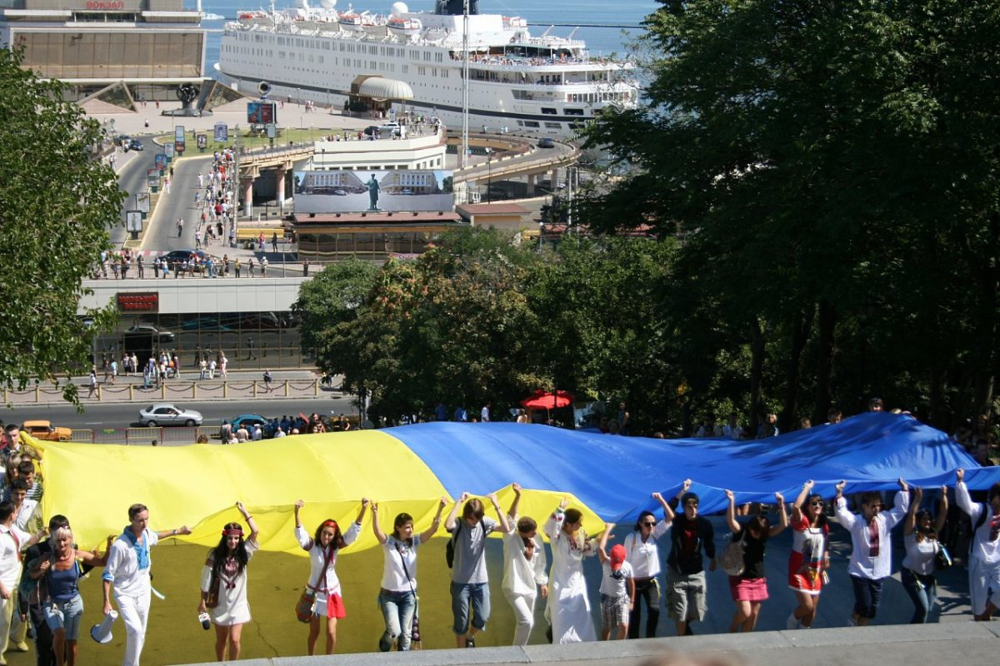

Державне свято України
День Незале́жності Украї́ни, або День Незале́жности Украї́ни — державне свято України, яке відзначається щороку 24 серпня на честь ухвалення Акта проголошення незалежності України та від'єднання від СРСР, що заведено вважати датою відновлення незалежної держави Україна.
Зміст
- Історія
- Святкування
-
Історія
В часи холодної війни, особливо після вбивства Степана Бандери, українська діаспора на Заході спонсорувала святкові заходи до події «День незалежності України», що відзначався закордонними українцями 22 січня — в річницю Акта Злуки. Українська громадськість лобіювала участь на таких заходах
урядових представників різних рівнів та видання мерами прокламацій про позначення 22 січня «Днем незалежності України» на теренах місцевих громад. На сторінках «Свободи» можна знайти багато подібних повідомлень, зокрема, з Нью-Йорка, Міннеаполіса, Джерсі-Сіті, Олбані, Торонто.
17 березня 1991 року проводився єдиний в історії СРСР Всесоюзний референдум про збереження СРСР. Одночасно з цим референдумом в Україні за наполяганням Народного Руху України за перебудову, було проведене республіканське консультативне опитування: «чи згодні ви, щоби Україна була у складі
Союзу Суверенних Республік на підставі Декларації про державний суверенітет України». Схвально на нього відповіло понад 80 % опитаних.
Наслідком ідеологічної боротьби Народного Руху України за перебудову стало те, що референдумом і опитуванням в Україні були легітимізовані щонайменше дві (а з бажанням Горбачова — то три) зовсім різні форми союзної держави і зроблений крок до незалежності — зобов'язання республіканській
владі розробити й ухвалити Декларацію про державний суверенітет України.
5 червня 1992 року Верховна Рада України постановила: у частині першій статті 73 Кодексу законів про працю України слова «16 липня — День незалежності України» замінити словами «24 серпня — День незалежності України». Тому від 1992 року День незалежності України щороку відзначається 24
серпня.
Святкування
За часів Януковича
Вперше в історії України рішення влади про скасування військового параду у таких містах як: Київ, Керч, Одеса, Севастополь, а також містах, де розташовані штаби військових округів і видів Збройних сил України, з нагоди 20-річчя Дня незалежності України, що аргументувались заощадженням
коштів[10], викликали незгоду суспільства і спонукала до організації альтернативних заходів. Опозиційні партії України, що увійшли до Комітету опору диктатурі, подали спільну заявку на акції протесту 24 серпня 2011 року.
24 серпня 2011 року Комітет опору диктатурі вирішив організувати Народний марш на честь Дня незалежності України й запросив усіх громадян прийти об 11.00 до пам'ятника Шевченку у Києві, щоби звідти разом вирушити на Хрещатик. Судовою постановою опозиції заборонили рух Хрещатиком і вихід на
цю вулицю також. Тому рух організованої колони розпочався вулицею Володимирською, чого не забороняв жоден суд. Біля Будинку вчителя колона зустрілася з посиленими загонами міліції, яка блокувала рух колони. Відбулися сутички з міліцією, наслідком яких були постраждалі серед цивільного
населення.
За часів Порошенка
Вперше в історії України відзначення дня Незалежності відбуваються за умов, коли частина території України була окупована. Парад до Дня Незалежності 2014 року викликав неоднозначне сприйняття через те, що саме в цей день російські війська розпочали наступ на Іловайськ, що призвело до
оперативного оточення і загибелі великої кількості українських військових під Іловайськом. Керівництво держави звинувачували в тому, що на параді «дефілює новенька техніка, а на фронті воює та, що доживає віку й розлітається на ходу». Пізніше Генпрокуратура заявила, що проведення військового
параду «жодним чином не вплинуло на рівень боєздатності сил АТО, оскільки до нього були залучені підрозділи, які майже повністю комплектувалися за рахунок військовослужбовців строкової служби і курсантів військових навчальних закладів, не мали необхідного рівня готовності до виконання
завдань, а тому не могли залучатись до проведення антитерористичної операції»[18] Концерти до Дня Незалежності у 2014—2019 режисував Сергій Проскурня.
24 серпня 2018 року, з нагоди Дня Незалежності, в м. Києві відбувся урочистий Парад військ. На параді були представлені 250 одиниць військової техніки, в заходах також взяли участь 4,5 тисячі військовослужбовців. Всього по Хрещатику прокрокували 24 парадних розрахунків, які представляли
підрозділи ЗС України, Національної гвардії України, Державної прикордонної служби України, Служби безпеки України та інших формувань, що виконують завдання з охорони та оборони України.
За часів Зеленського
Як і в часи В. Януковича, паради за участі військової техніки не проводяться. Незгода громадськості з форматом святкувань у 2019 році призвела до того, що вперше в історії України проводились два паради — офіційний та неофіційний, за участі ветеранів російсько-української війни, що отримав
назву «хода гідності»
З нагоди Дня Незалежності України 24 серпня 2022 року, в ході церемонії, яка відбулася на подвір’ї Маріїнського палацу в м. Києві, Президент України Володимир Зеленський вручив ордени «Золота Зірка» військовослужбовцям, яким присвоєно звання Героя України, і членам родин загиблих Героїв, а
також інші державні нагороди. Згідно з розпорядженням Київської міської військової адміністрації від 19 серпня 2022 року, в столиці України в період з 22 до 25 серпня 2022 року було заборонено проводити масові заходи, мирні збори, мітинги та інші заходи, що пов'язані з великим скупченням
людей
24 серпня 2023 року, у Києві, на Софійській площі, відбулися офіційні заходи з нагоди Дня Незалежності України. У церемонії взяли участь Президент України Володимир Зеленський, Прем’єр-міністр України Денис Шмигаль, Голова Верховної Ради України Руслан Стефанчук, керівник Офісу Президента
України Андрій Єрмак, секретар Ради національної безпеки й оборони України Олексій Данілов, українські воїни та представники іноземних держав. З нагоди Дня Незалежності президент Володимир Зеленський вручив нагороди українським військовим, трьом із них — посмертно. Також відбулася церемонія
вручення Бойових прапорів та стрічок для бригад, прикордонних загонів та полку Національної гвардії України.

В містах України
Загалом основні святкування на державному рівні проходять у Києві, де традиційно Президент України дає урочисте прийняття до Дня незалежності. Також перші особи держави покладають квіти до пам'ятників видатним українцям (переважно, до пам'ятників Володимиру Великому, Богдану Хмельницькому,
Михайлові Грушевському і Тарасу Шевченку) та беруть участь в молитві за Україну, що як заведено, відбувається у Софії Київській за участі представників усіх конфесій, наявних в Україні. Щорічними подіями до свята в столиці, є Міська виставка квітів в Печерському парку, чиї схили на той час
завжди вкриваються барвами яскравих квітів, що в сукупності утворюють різні присвячені урочистостям зображення, та великий святковий концерт. Святкування увінчується ввечері святковим феєрверком. В окремі роки у Києві проводилися військові паради (1998, 1999, 2001, 2008, 2009, 2014—2019,
2021 роки). 2017 року, на Хрещатику була організована виставка української військової техніки.
У Дніпрі до Дня незалежності України, відбувається урочисте покладання квітів до пам'ятника Шевченка та відслужують молебні «В ім'я процвітання України та підвищення добробуту Українського народу» в Троїцькому і Преображенському кафедральних соборах. Також у Новобогородицькій фортеці
проводяться спортивно-розважальні змагання, козацькі розваги, ярмарок солодощів і виробів українського народного мистецтва, різноманітні майстер-класи, звучить народна музика і живий спів.
У Луцьку в День незалежності відбувається акція „Українська вишиванка”. Усім учасникам акції видають пам'ятні посвідчення. Відбувається нагородження учасників у різноманітних номінаціях, зокрема, «Найбільша родина у вишиванках», «Найповажніший учасник у вишиванці», «Найменший учасник у
вишиванці», «Найсамобутніша вишиванка», «Сорочка поколінь», «Співзвуччя духу і сердець» (для пари), «Найпатріотичніший дідусь та бабуся» тощо.